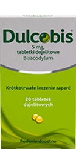
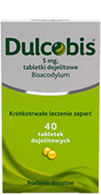
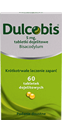
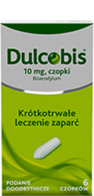

naturalneuczucie ulgi
Naturalne uczucie ulgi
Naturalnie współpracuje z organizmem łagodząc zaparcia i regulując wypróżnienia.1
Nie zmienia smaku napoju1
Neutralny smak - po prostu dodaj DulcoSoft do 150 ml Twojego ulubionego napoju, najlepiej rano.1
Praktycznie niewchłanialny przez organizm1
Wywiera swoje działanie w sposób czysto fizyczny: nie jest wchłaniany przez organizm oraz ulega wydaleniu wraz z kałem w postaci niezmienionej.1
Daje przewidywalny efekt1
Nie powoduje nagłego działania przeczyszczającego. Praktycznie nie daje uczucia nagłego parcia.1
Czy wiesz, że zaparcia dotykają nawet do 31% dorosłych?7
Do najczęstszych przyczyn zaparć zaliczamy:
-
 złe nawyki żywieniowe,
złe nawyki żywieniowe,
-
stresujący tryb życia,
-
siedzący tryb życia,
-
starzenie się organizmu,
-
czy podróże.
Zaparcia mogą również towarzyszyć chorobom przewklekłym, nawet tym niezwiązanym z układem pokarmowym. Zaparciom często towarzyszą objawy takie jak: bóle brzucha, wzdęcia, brak apetytu, uczucie pełności i zblokowania.8,9
Twoja
ulga
w zaparciach
Zawiera Makrogol 4000
Makrogol wykazuje wysoką zdolność do wiązania wody i opóźnia wchłanianie wody w jelitach, przez co ułatwia wypróżnienie.1
Poprawia komfort wypróżnień1
Zaczyna działać nawet po 24 godzinach.1 Dodatkowo reguluje wypróżnienia do jednego na dobę.2
Łagodne działanie
Łagodnie i skutecznie przeciwdziała zaparciom i nieregularności wypróżnień.1 Może być stosowany przy przewlekłych zaparciach.3
Przeznaczenie
Odpowiedni dla kobiet w ciąży i karmiących piersią. Produkt dla całej rodziny (dzieci powyżej 6. miesiąca życia).1
dawkowanie
Najlepiej w pojedynczej dawce przyjmowanej rano. Produkt można zmieszać z wybranym napojem, np. ze szklanką wody, soku owocowego lub herbaty (około 150 ml).1
skład
Dulcosoft 250ml
10 ml roztworu zawiera 5 mg makrogolu 40001
Rodzina produktów Dulco
| Typ Produktu |
|---|
| Właściwości |
| Składnik |
| Opakowanie |
|  |  |
duże opakowanie  |
 |
|---|---|---|---|
| Dulcobis | Dulcobis | Dulcobis | Dulcobis |
| Tabletki Lek bez recepty |
Tabletki Lek bez recepty |
Tabletki Lek bez recepty |
Czopki Lek bez recepty |
| Przynosi ulgę w zaparciach już po 6h4 | Szybka ulga w zaparciach już po 10 minutach5 | ||
| Bisakodyl | Bisakodyl | Bisakodyl | Bisakodyl |
| 20 tabletek | 40 tabletek | 60 tabletek | 6 czopków |